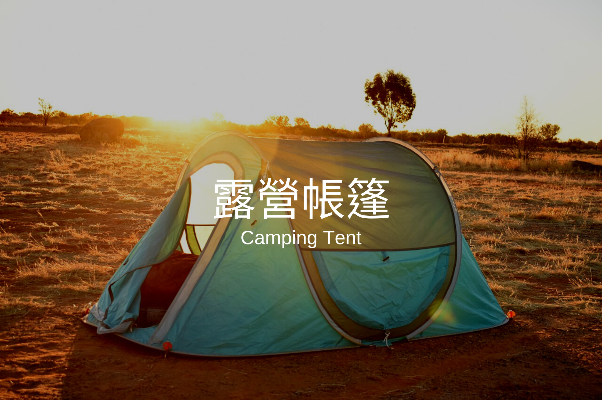
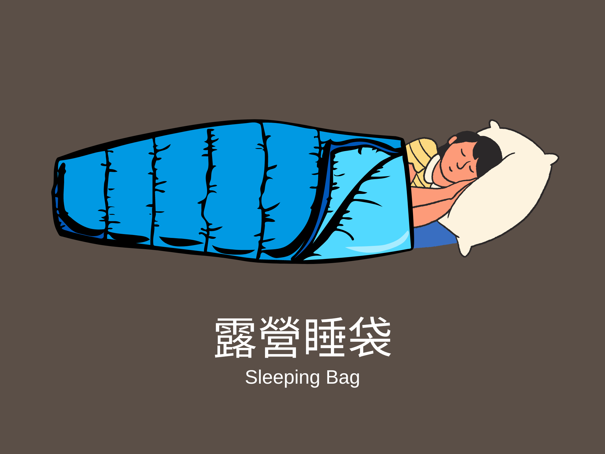

☀露營知識☀ 你必須知道的露營小知識
身為露營愛好者的你，一定要知道的露營知識！

2022年全台瘋露營，你跟上了嗎？
第一次露營卻不知道如何下手嗎？
知識補給站，讓你了解露營所有大小事
如果你想了解更多露營的知識內容，那就繼續看下去吧！

Ｑ：如何挑選露營地？
Ａ：使用「我們的網站」找露營地
「我們的網站」整合了全台所有合法露營地，可以透過很多分類選項，事先篩選你想找出的露營地。
新手露營建議可以挑選約海拔1000公尺以下的低海拔的營區為優先考慮，原因有以下兩點：
高山的風景雖然漂亮，但是環境也較惡劣。在高海拔地區早晚溫差很大，晚上的低溫約是攝氏5至10度，可能是你在平地時沒預料到的冷， 新手露營也可能會因爲經驗不足，而沒準備足夠的保暖裝備。
高海拔的營區的路況通常比低海拔營區的路況差，除了山路較曲折，附近機能也較不方便。 新手露營建議找露營區附近機能佳的露營地，像是附近車程30分鐘內有商家或補給站，在有突發狀況發生或是忘記帶某些東西， 也會替代方案可以解決。

Ｑ：如何挑選帳篷？
Ａ１：確定使用人數
「帳棚標示人數」通常比「露營的實際人數」多1~2位的誤差值。 若減少1~2位，在睡覺或是休息時會有更舒適的休息空間！ 帳篷空間大小會直接影響使用人數，通常帳蓬都會寫「人數」，像是五人帳或是六人帳...。 但通常帳棚寫的人數要“減一”會比較舒適，例如：四個人睡五人帳、五個人睡六人帳...。 當然你也可以2個人用一個六人帳篷，只要你不覺得體積大、搭設麻煩、重量又很重。
Ａ２：確定露營習慣
新手沒什麼露營經驗，無法確定自己的露營習慣，可以回答下面的問題評量露營習慣。
還不知道露營帳篷怎麼挑嗎？
快來看看 ☀帳篷款式☀ 露營帳篷好幾種該從何挑起？帳篷種類大解析

Ｑ：在外睡覺如何更舒適？
Ａ１：選擇一個適合的睡袋
睡袋材質主要分為「羽絨」及「人造纖維」，睡袋通常在標示都有寫該產品適合的溫度，像是極限溫度、最低溫度、舒適溫度...等等標示。 建議新手一開始先買較保暖的睡袋， 可以選擇比實際溫度還要低攝氏5度以上的睡袋會較適合。睡袋是可以彈性調整的，不用怕夜晚時太冷，熱的時候也可以將拉鍊拉開，一舉兩得。 舉例來說，營區攝氏溫度為10度，你可以買舒適溫度5度的睡袋。 睡袋形狀種類也有分，有錐形、方形、彈性型、人體型...等等。這些類型都會影響睡袋的「保暖度」與「睡覺的自由度」，因此在挑選睡袋可以多方面考量或參考評價！
Ａ２：選擇一個適合的充氣床墊
「充氣床墊」幾乎是老鳥的必備裝備，在選一個好的床墊也是非常重要。充氣床墊有分: 自動充氣、手動充氣的款項。大小也有分單人床墊、雙人床墊的形式。
自動充氣床墊，通常具有一個類似吹嘴的開關，轉開之後睡墊會自動吸氣膨脹，飽滿後再把開關關閉即可。 雖然自動充氣床墊看起來較方便，但它通常較薄、較貴且收納體積也較大。好處是它較輕且適合登山、健行。
手動充氣床墊，它必須配合打氣機使用。
Ａ３：正確使用地墊
「地墊」跟「地布」是不一樣的。「地布」適用於帳篷外，是墊在帳棚底下的，可以防止地面濕氣進入帳篷內，以及保護帳篷底部避免損壞。 「地墊」適用於帳篷內，具有防潮、保暖的功能，腳踩在上面也會比較舒服。地墊的重量輕，登山野營的時候攜帶野方便！他們的用途有差別，若分不清楚的朋友們購買前可以詢問確認一下唷。